01
山中营地 / 凯特曼夫妇
他们肯付钱，却不肯把他当自己的律师。
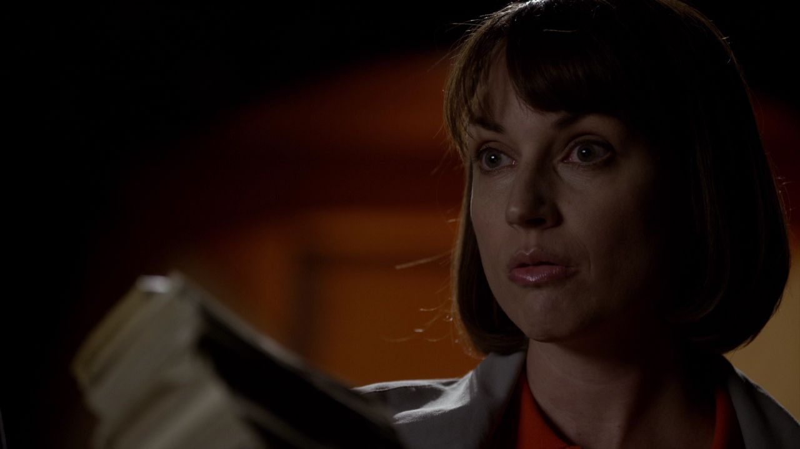
剧情事实凯特曼夫妇拒绝聘请吉米，提出用钱换取保密。吉米最后收下，并将其解释为法律服务的预付款。 [1][2]
这一场为什么重要 · 个人解读
这笔钱的用途没有因换了名称就变得简单。对方想买沉默，吉米想把它写成业务关系；两边都在寻找一种能继续自我辩护的说法。更刺痛他的是，他被认为适合替有罪的人辩护，却不适合成为这个自称清白家庭的门面。
因此 →他拿到了钱，却没有拿到被平等承认的位置。

风骚律师 · 第一季第 04 集
钱换了名字，骗局换了舞台。
一个被嘲笑的律师，把自己推上新闻。
剧透边界 截至 S01E04，含本集结尾
10 个剧情节点 · 7 位人物 · 04 组冲突找到凯特曼家的钱以后，吉米仍没得到想要的委托。对方愿意付钱让他保密，却嫌他像专为有罪者服务的律师。他把这份羞辱和这笔钱一起带回城里，开始借用大律所的门面制造自己的机会。本集围绕一个问题不断变形：别人相信的形象，究竟由什么支撑？
读这一集，跟住三件事钱的名称 / 借来的形象 / 救人镜头的来历
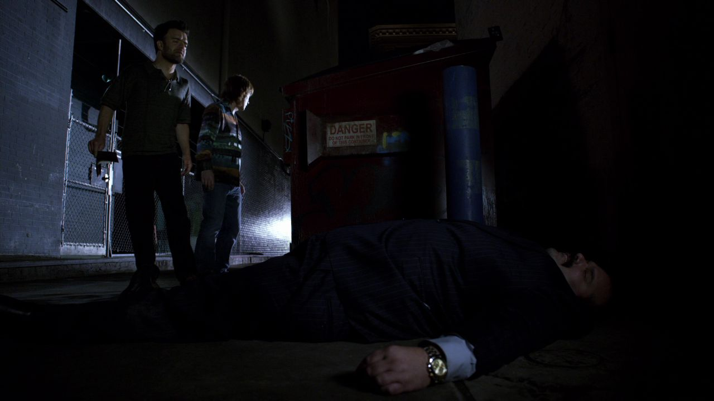
三幕梳理本集。每一场都区分剧情事实与个人解读，把行动、动机和后果连起来。
先把收来的钱，变成自己能够接受的说法。

剧情事实凯特曼夫妇拒绝聘请吉米，提出用钱换取保密。吉米最后收下，并将其解释为法律服务的预付款。 [1][2]
这笔钱的用途没有因换了名称就变得简单。对方想买沉默，吉米想把它写成业务关系；两边都在寻找一种能继续自我辩护的说法。更刺痛他的是，他被认为适合替有罪的人辩护，却不适合成为这个自称清白家庭的门面。
因此 →他拿到了钱，却没有拿到被平等承认的位置。
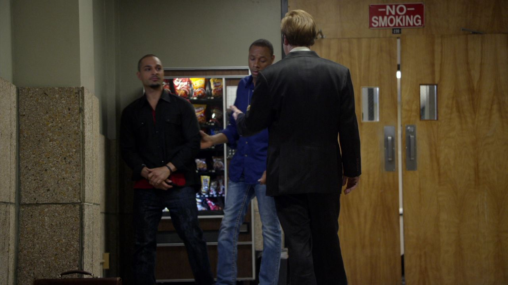
剧情事实纳乔获释后怀疑吉米示警。吉米否认由自己所为，同时强调警告避免了伤害，也使纳乔免于真正犯下绑架等重罪。 [1][2]
这是一段非常会保护自己的论证：把可能暴露的介入解释为对所有人都有利。论证并非全无道理，却没有直接回答究竟是谁打了电话。吉米能识别真实后果，也能利用这些后果绕开自己最不愿承认的部分。
因此 →暂时摆脱追问之后，他开始花钱重新塑造自己。
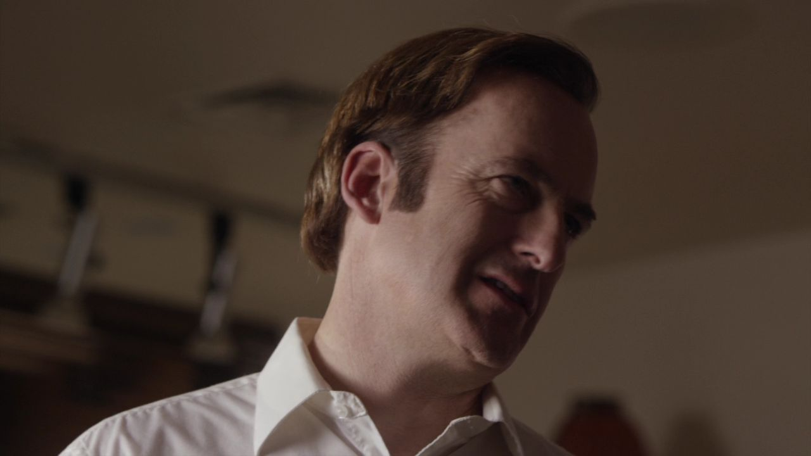
剧情事实吉米订做接近霍华德风格的西装、整理发型，并设计与 HHM 视觉相近的个人广告。 [1][2]
他先前需要用口音和借口补门面，现在索性借用公众已经认识的可靠形象。模仿同时包含羡慕与挑衅：想得到对方拥有的信任，又想让对方为自己的出现不舒服。职业上的不平等因此被穿在身上。
因此 →形象复制被放大成一张所有人都能看见的广告牌。
钱缓解生计，没有解决被轻视的身份。
模仿、冲突与摄像机，接成一条路径。
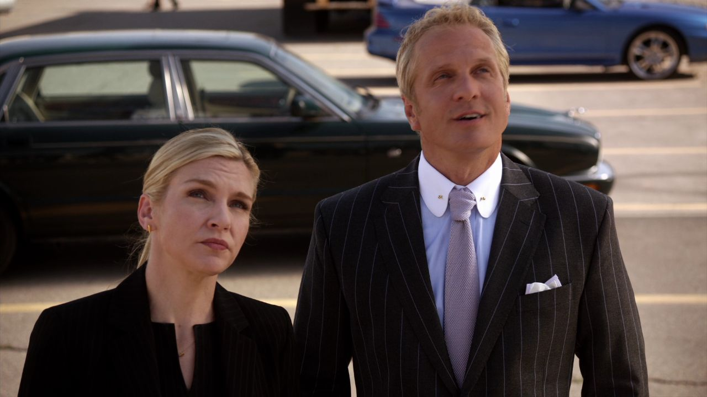
剧情事实吉米竖起与 HHM 标识和霍华德外观高度相似的广告牌。霍华德认为这侵犯律所权益，要求处理。 [1][2]
第一集发生在火柴册上的名字争论，被他搬到更大的公共空间。他用相似性取得辨识度，也主动制造了对方必须回应的局面。被看见的代价，是让自己的宣传先依赖于与 HHM 的冲突。
因此 →金把要求带到他面前，私人熟悉也进入职业边界。
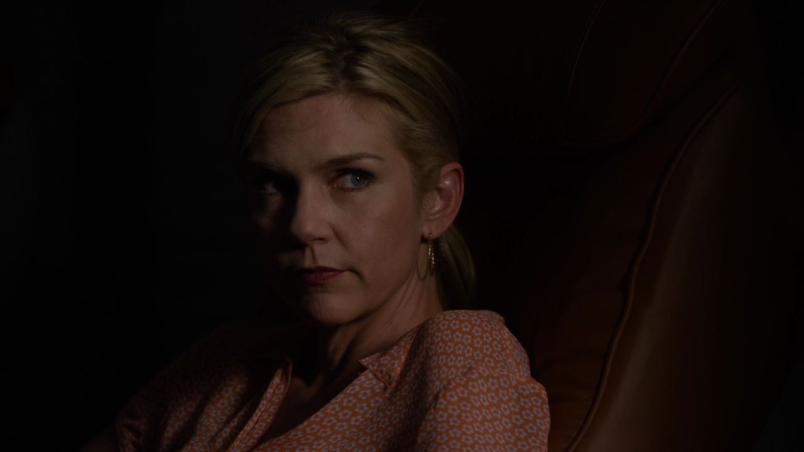
剧情事实金与吉米谈起广告的问题，要求他停止模仿。吉米没有把这看作纯粹的设计争议，仍不肯轻易退让。 [1][2]
金知道他想争一口气，但懂得情绪不等于需要在工作里为它背书。吉米则容易把专业上的反对继续听成身份拒绝。两人之间有亲近，所以这场冲突既没有变成陌生人的客套，也没有靠亲近自动解决。
因此 →事情进入正式程序，他失去了保留广告牌的理由。
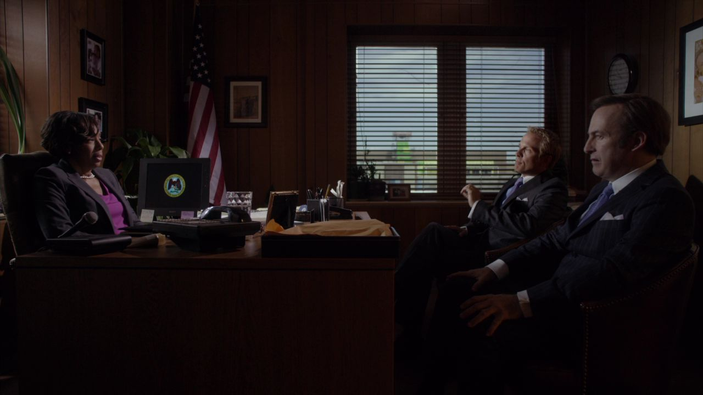
剧情事实裁决要求吉米撤下广告。媒体没有按他的期待把律所争执做成小人物受压迫的故事，他于是找来学生摄制人员自己拍摄。 [1][2]
他并未在法律争议中获胜，而是发现了可以改变观看方式的渠道。胜负从能否保留相似广告，转成谁能让公众相信自己值得支持。会解释事实的能力，再次靠近安排事件的诱惑。
因此 →摄像机已经就位，接下来只差一个能够传播的场面。
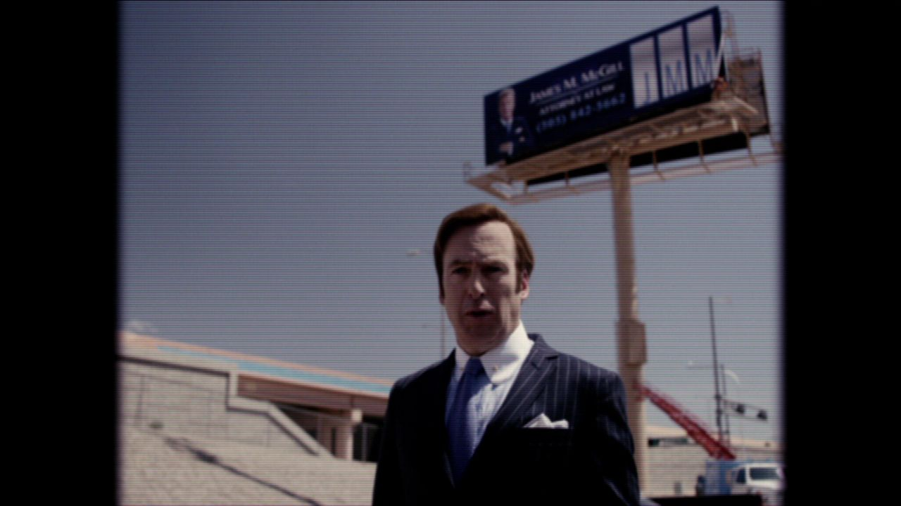
剧情事实吉米面对摄像机陈述小律师的困境。此时拆广告牌的工人突然悬在高处，引起现场人的注意。 [1][2]
最初的演说仍以自己为中心；高处的危险瞬间给了观众一个更容易读懂的故事。法律商标争议有复杂来由，救人却能被一个动作说明。他懂得这种差别，也懂得镜头能把它带给更多人。
因此 →故事的中心从受压迫的律师，切换成能够救人的律师。
程序要求撤牌，吉米转向改变公众叙事。
一次救援，同时产生赞赏与怀疑。
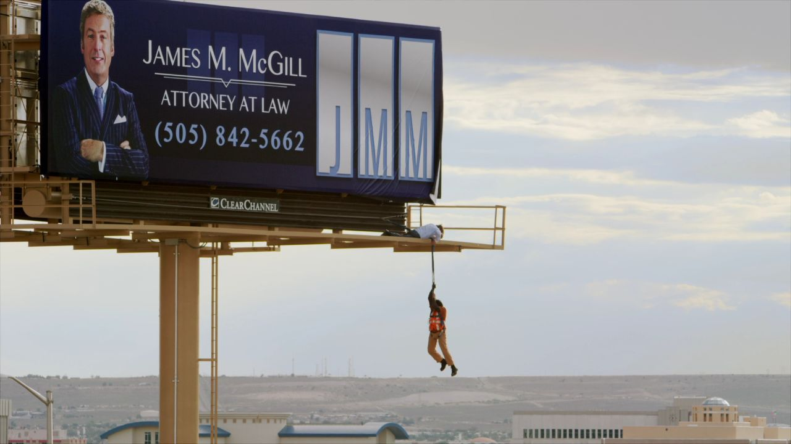
剧情事实吉米爬上广告牌，把悬挂的工人拉回安全处。镜头呈现两人配合的迹象；现场和摄制人员记录下救援。 [1][2]
与首集的假车祸相比，这场安排更成功地控制了谁看见什么。冒险和攀爬真实发生，事件被如何安排也同样重要。救人形象可以凭真实动作成立，却仍掩盖危险与机会的来历；真实性不是一个只能全真或全假的开关。
因此 →他需要的公众形象，终于获得可传播的画面。
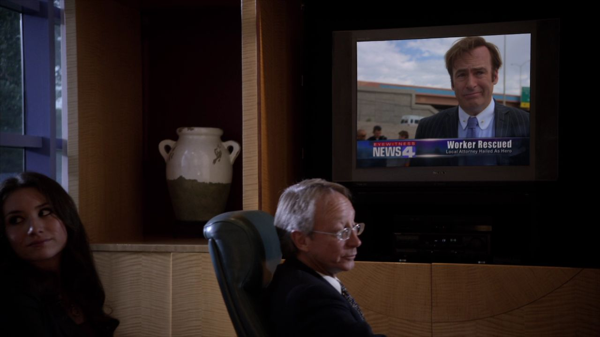
剧情事实救援成为新闻，吉米得到更多关注和潜在客户。霍华德认定这是宣传安排，金对他的做法也有自己的判断。 [1][2]
公众看到的勇敢，与熟人看到的套路，来自同一个片段。熟人可能判断得更准，却未必能阻止简洁的英雄故事传播。这一段不必否认吉米的胆量，真正要问的是：观众被允许知道哪些前提？
因此 →最希望得到哥哥肯定的人，反而藏起了这份报道。
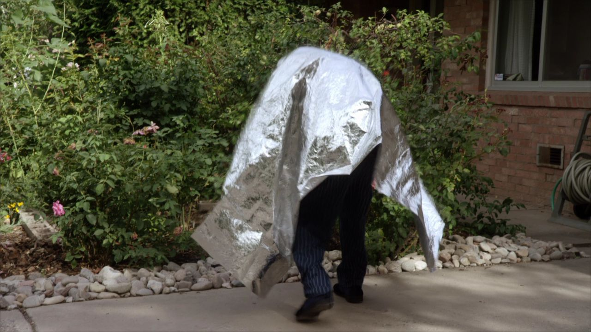
剧情事实吉米给查克送报纸时藏起刊有救援报道的本地报。查克察觉缺失，冒着自己害怕的环境走到邻居家取报，并留下钱。 [1][2]
新闻本该成为吉米证明价值的凭据，到哥哥这里却变成需要隐去的东西。他清楚查克可能追问事件的来路。查克主动去找报纸，也使家庭照顾不再只是单向给予：被照顾的人仍会寻找自己要知道的事实。
因此 →这场宣传的余波，已经进入兄弟的日常。
新闻被传播，报纸却在家中被隐藏。
切换故事阶段，再点击角色，查看本集行动、个人诉求与关系变化。
现金已被发现，夫妇愿意付钱换保密，却不愿聘请吉米。
关系图只归纳本集已展示的行动与联系，不将后续动机提前写入。 人物照统一登记并跨集复用；阶段说明含个人解读，连线不表示每个人已知道全部信息。
开场的假表与结尾的救援，使用了不同材料，却都控制着旁观者的判断前提。
被拒绝的委托，留下了一笔能用于包装的付款。
回看剧情 ↗02相似广告引来拆除要求，给了他诉苦的舞台。
回看剧情 ↗03救人镜头替代复杂争议，成为新闻。
回看剧情 ↗个人解读假表骗局让目标相信自己眼光好，救援让公众相信看到了偶然出现的英雄。重要的阅读动作，是把每个人以为自己亲自判断的那一刻，与别人事先布置的条件放到一起。
四组冲突深读 · 以下为个人解读，事实边界随卡片标注。
这份付款最尖锐的地方，是它把吉米想要的东西拆开了：钱可以给，正式代理人的位置不愿给。贝茜一边需要他帮忙压住真相，一边用“有罪的人才找你”维持自己与他之间的距离。
吉米把付款叫预付律师费，试图把关系带回职业领域。但名称无法自动决定事实。案件没有真的交给他，沉默却已经成了钱的交换条件，这个没有解决的矛盾会继续留在他的选择里。
事实边界：只讨论本次付款与拒聘，不提前使用第七集的归还安排。
英文短句核对非官方对白转录；中文为本页自译，潜台词属于个人解读。
You're the kind of lawyer guilty people hire.你是那种有罪的人才会找的律师。中文自译
她拒绝正式聘请，却愿意付钱换沉默。
这句话把依赖与轻视放在同一笔交易里。
本页选用短句共 17 个英文词。配图呈现相应人物与场景，不逐句指认发声瞬间。核对对白来源 ↗
只在截至本集的情节中阅读；以下均为个人解读。


英雄形象带来机会，报纸却被藏起来。
被全城看见的那个人，
仍然在意哥哥会怎样看他。
已经知道 · 剧情事实吉米的救援成为新闻，广告必须撤除；查克发现缺报，外出取报。
还不能预先回答新客户是否适合他、查克如何应对报道与自己的身体状态，后续才会展开。
剧透截至第一季第4集，包含本集结尾。不涉及后续集数或《绝命毒师》的具体揭示。 不用后续的结果，替此刻的人物决定动机。